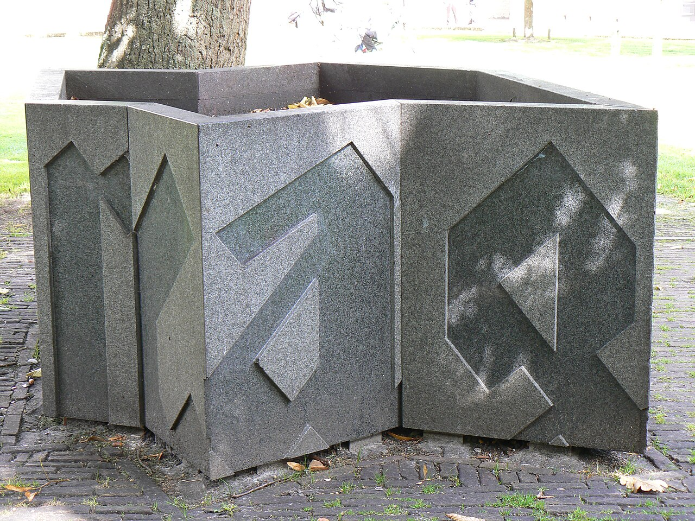

PART 6. 속도와 종합 · 14주차 연결성
기술을 발명하는 것은
그 기술의 사고를 발명하는 것임
폴 비릴리오 — 속도와 질주학
00이 주차의 위상
9~10주차 이니스의 두 축에서 시간 축의 극한이 오늘임. 그리고 슬라이드가 이미 "맥루언의 지구촌, 플루서의 텔레마틱 사회와 대비"를 명시함.
비행기를 발명하면 추락 사고를 발명한 것임.
배를 발명하면 난파를 발명한 것임.
원자력을 발명하면 노심용융을 발명한 것임.
배를 발명하면 난파를 발명한 것임.
원자력을 발명하면 노심용융을 발명한 것임.
그렇다면 — AI를 발명하면 무엇을 발명한 것인가.
빈칸 셋 — 오늘 끝에 채워 볼 것
- SNS를 발명한 것은 ______를 발명한 것임.
- 추천 알고리즘을 발명한 것은 ______를 발명한 것임.
- 생성 AI를 발명한 것은 ______를 발명한 것임.
01오늘 만날 개념
- 질주학dromology
- 그리스어 dromos(경주·달리기) + logos. 속도의 논리를 연구하는 학문임. "누가 더 빠른가"가 곧 "누가 더 센가"인 세계를 연구함.
- 도정성trajectivity
- 출발점도 도착점도 아닌 도정(가는 과정) 자체의 문제임. 고속열차 창밖을 아무도 안 봄. 탔고 내렸다는 사실만 남음.
- 피크노렙시pyknolepsy
- picnos(빈번한) + lepsis(발작). 잦은 의식 단절임. 강의 중 휴대폰을 봤다 고개를 들면 몇 문장이 사라져 있음. 그 사라진 구간.
- 적극적 · 소극적 광학active / passive optics
- 적극적은 빛과 속도로 매개된 기계를 통해 봄(모니터·카메라). 소극적은 대상을 그대로 통과시킴(물·유리).
- 판옵티콘 · 시놉티콘panopticon / synopticon
- 소수가 다수를 봄과 다수가 소수를 봄임.
- 순수전쟁pure war
- 실제로 싸우지 않으면서 억지력만으로 상대를 굴복시키는 상태임. 손자의 "싸우지 않고 이긴다"의 기술적 완성.
- 병참학logistics
- 무엇을 얼마나 빨리 어디로 옮기는가의 학문임. 오늘 물류 기업이 하는 일이 원래 군대의 기술임.
- 통합적 사고integral accident
- "기술을 발명하는 것은 그 기술의 사고를 발명하는 것"임. 사고는 예외가 아니라 내장되어 있음.
- 미래주의Futurism
- 1909년 마리네티의 이탈리아 예술운동. 속도·기계·전쟁 찬미. 이후 파시즘과 결합했음.
02비릴리오라는 사람

Gerardus · Public domain · Wikimedia Commons
- 저작 — 『속도와 정치』, 『동력의 기술』, 『전쟁과 영화』, 『소멸의 미학』, 『탈출속도』, 『정보과학의 폭탄』.
- 출발점이 특이함 — 2차 대전 중 낭트 폭격을 겪었고, 전후 대서양 연안의 독일군 벙커를 직접 찾아다니며 사진 찍고 측량했음.
- 그래서 건축을 전쟁의 산물로 봄. 그에게 건물·도로·통신망은 모두 군사 시설의 민간판임.
입장
- 속도와 공간에 주목함 — 매체를 "무엇을 전달하는가"가 아니라 "얼마나 빨리 전달하는가"로 읽음.
- 전쟁·매체·정치를 한 덩어리로 다룸.
- 매체와 텔레마틱 사회에 부정적임. 아도르노보다 더 부정적임.
- 별명 — 테크노포비아, 서구 지성계의 카산드라. 카산드라는 재앙을 정확히 예언하지만 아무도 믿지 않는 저주를 받은 트로이의 예언자임. 이 별명 자체가 학계의 양가적 평가를 담고 있음 — 맞는 말인데 과장돼 있다는 것.
balla_dynamism_of_a_dog.png
자코모 발라 〈줄에 매인 개의 움직임〉 (1912, 올브라이트-녹스 미술관)
저작권 때문에 자동 수집 제외 — 발라 사망 1958년 · 보호기간(사후 70년) 2029년까지
소장처 올브라이트-녹스 미술관 웹사이트 링크로 대체 가능
소장처 올브라이트-녹스 미술관 웹사이트 링크로 대체 가능
03미래주의 선언 (1909)
"우리는 새로운 아름다움, 다시 말해 속도의 아름다움 때문에
세상이 더욱 멋있게 변했다고 확언한다.
포탄 위에라도 올라탄 듯 으르렁거리는 자동차는
사모트라케의 니케보다 아름답다."
세상이 더욱 멋있게 변했다고 확언한다.
포탄 위에라도 올라탄 듯 으르렁거리는 자동차는
사모트라케의 니케보다 아름답다."
마리네티 「미래주의 선언」(1909).
같은 선언문의 다른 대목 — 불편하지만 함께 읽어야 함
- "우리는 세상에서 유일한 위생학인 전쟁과 군국주의, 애국심과 자유를 가져오는 이들의 파괴적 몸짓, 그리고 여성에 대한 조롱을 찬미한다."
- "우리는 박물관, 도서관, 모든 종류의 아카데미를 파괴하고, 도덕주의, 페미니즘, 모든 기회주의적이고 실용주의적인 비겁함에 맞서 싸울 것이다."
왜 이 텍스트를 읽는가 — 세 가지 이유
- 속도 예찬이 파시즘과 결합한 역사적 증거임. 마리네티는 실제로 무솔리니를 지지했고 파시스트당에 가담했음.
- "박물관·도서관·아카데미를 파괴하라" — 이것은 9~10주차 이니스의 시간 편향 매체를 없애자는 말과 정확히 같음. 기억의 저장소를 없애고 순간의 속도만 남기자는 것임.
- 지금의 기술 담론에 이 어조가 남아 있는가 — "빠르게 움직이고 부수라".
오늘의 언어로 옮기면
- "파괴적 혁신" — 왜 하필 '파괴'인가.
- "레거시" — 유산이라는 뜻인데 실제로는 버려야 할 낡은 것을 가리킴.
- "선점자 우위", "출시 속도가 전부다", "빠르게 실패하라".
- 스스로 물어볼 것 — 이 언어들은 무엇을 좋은 것으로 전제하는가. 무엇을 비용으로 취급해도 되는 것으로 만드는가. 그리고 속도를 찬미하는 언어는 왜 늘 폭력의 언어와 붙어 있는가.
04무기의 계보와 저항
속도의 세 종류
| 종류 | 지금의 사례 |
|---|---|
| 국가 장치가 규제·전유하는 속도 | 공공 도로의 관리, 제한속도 → 통신 대역폭 배분, 망 중립성 논쟁, 주식시장의 서킷브레이커 |
| 전 세계적 총력전의 속도 | 핵 전략, 자본의 경쟁 → 초단타매매. 거래소에 서버를 1미터라도 가까이 두려고 돈을 씀 |
| 유목적·혁명적 속도 | 대중의 저항. 빠르게 모이고 빠르게 흩어짐 → 실시간으로 조직되는 집회, 해시태그 운동 |
무기의 발달 네 단계
1. 차단 무기
성벽, 요새, 갑옷, 참호 — 공간을 막음
2. 파괴 무기
창, 화살, 대포, 기관총, 미사일 — 공간을 넘음
3. 정보통신 무기
망루, 전신·전화, 레이더, 인공위성 — 보는 것이 무기가 됨
4. 순수전쟁 무기
핵 억지력. 적의 움직임 자체를 중단시킴 → 병참학
3단계가 오늘의 핵심임 — 미디어는 무기의 계보에 속함
망루 → 정찰기 → 위성 → 실시간 감시·데이터 수집— 이것은 한 줄로 이어짐.- 그래서 그는 매체사를 군사사로 읽음. 이것이 그의 독창성임.
- 실제 계보 — 인터넷은 미 국방부 ARPANET. GPS는 미 공군의 유도 시스템으로, 1983년 대한항공 007편 격추 이후 민간 개방됨. 드론은 정찰기에서 배송·촬영으로. 컴퓨터는 탄도 계산과 암호 해독에서 나왔음(12주차 키틀러가 이미 말했음).
- → "우리가 쓰는 매체는 대부분 무기의 민간 전용임."
저항의 방식 세 단계
- 진지전 — 1차 대전. 참호에 눌러앉아 공간을 지킴.
- 게릴라전 — 나폴레옹군에 맞선 스페인의 '영토 없는 저항', 베트남전의 '신체 없는 저항'(땅굴, 정글, 보이지 않음).
- 미디어 투쟁 — 영토가 없는 팔레스타인의 '환영적 정체성의 저항'. 오늘 — 촬영과 유포 자체가 저항 수단이 됨. 보이게 만드는 것이 무기임.
누에고치 사회
- 현대인은 움직이지 않고 집에 틀어박힌 채 커뮤니케이션 네트워크로만 연결됨.
- 저항은 중단·방해의 방식으로 이루어져야 함. 사고(事故) — 열차의 탈선, 자동차의 충돌, 그리고 자본주의에 대한 파업.
- 기계의 속도를 통제할 수 있는 '생체의 속도'(성찰·사유·결정의 속도)가 필요함.
- → 7주차 안더스의 "사회적 세계를 사적 공간에서 개별 체험"과 같은 것을 다른 이름으로 말함. 13주차 플루서의 원형극장형이 그 구조도임. 세 사람이 같은 것을 봤음.
- 비릴리오만의 처방 — 속도를 늦추는 것 자체가 저항임. 그런데 실시간 시스템에서 생체의 속도는 '병목'으로 취급됨. 이 긴장이 오늘의 정치임.
05질주학과 도정성
- 속도 자체보다 '경주의 논리'임. 속도를 둘러싼 경쟁이 초점임. 100km/h가 문제가 아니라 "저쪽보다 빨라야 한다"는 구조가 문제임.
- 속도가 공간과 시간의 형태를 규정함 — 거꾸로가 아님.
- 운송·통신 매체는 속도를 해석하는 수단임.
말 → 자동차 → 비행기 → 전파 → 광케이블 - 결과는 공간의 축소화, 역사의 가속화임.
- 속도를 지배함으로써 권력을 쟁취하고 유지함. 칭기즈칸의 역참, 나치의 전격전, 손자병법. 오늘은 먼저 아는 자가 이김.
도정성 — 오늘의 중심 개념
- 도정(가는 과정) 대신 출발과 도착만 남음.
- 여행의 과정은 없고 기차표만 기억됨.
- 자연적·물리적 공간이 무의미해짐. 결국 삶의 공간으로서의 도시가 소멸함.
가장 좋은 사례 — 배달앱과 내비게이션
- 출발과 도착만 있음. 도정은 지도 위의 파란 선이 되었음.
- "5분 남았습니다" — 시간이 거리를 대체함. 우리는 이제 "여기서 3km"가 아니라 "여기서 8분"이라고 말함.
- 라이더는 경로가 아니라 도착예정시각으로 평가받음 → 인간이 속도 시스템의 노드가 됨.
- 물건은 실제로 수백 km를 이동하지만 나는 점이 깜빡이는 것만 봄. 이동이 통째로 은폐됨.
- 스스로 물어볼 것 — 도정이 사라지면 무엇이 사라지는가. 우연한 마주침인가, 길을 아는 능력인가, 도시를 몸으로 겪는 경험인가.
- → 4~5주차 벤야민의 대도시 산책자가 여기서 죽음. 그런데 심혜련은 산책자가 죽지 않고 이사했다고 말함(10절).
슬라이드가 명시한 대비 구도
| 누구 | 공간의 소멸을 어떻게 보는가 |
|---|---|
| 맥루언 9~10주 | 지구촌 — 세계가 한 마을이 됨. 긍정 |
| 플루서 13주 | 텔레마틱 사회 — 멀리 있는 것이 가까이 옴. 조건부 긍정 |
| 비릴리오 오늘 | 공간의 소멸 — 도시와 삶의 터전이 사라짐. 부정 |
| 심혜련 | 혼종화·확장 — 소멸이 아니라 뒤섞이고 넓어짐 |
같은 현상, 네 가지 평가
이 강의에서 다섯 번째 반복되는 구도임. 왜 계속 반복되는가 — 매체는 파르마콘이기 때문임(2주차). 그리고 판단이 갈리는 지점은 늘 하나임. "무엇을 잃었다고 보는가."
06공간의 소멸
- 운송수단에 의한 공간의 소멸 + 통신기술에 의한 시간의 소멸임.
- 매체 기술로 유비쿼터스 디지털 공간이 탄생함.
- 실시간과 원격현전 — 물리적 거리의 소멸, 외부 세계의 내부화. '현재'라는 시간도 무의미해짐 — 모든 것이 동시에 일어나면 '지금'이 특별할 이유가 없음.
- 디지털 유목민의 출현. 그리고 억압과 통제의 사회가 가능해짐.
비릴리오
묵시록- 감시자본주의, 실시간 랭킹
- 알고리즘 노동 관리, 여론 조작, 딥페이크
레비의 집단지성
유토피아- 시공간의 변화가 낳는 다양성을 긍정함
- 위키백과, 오픈소스, 시민 개발 프로젝트
둘 다 실현됐다면, 무엇이 갈랐는가
- 힌트 — 누가 소통 구조를 소유하는가(13주차 플루서), 누가 기록을 쓰는가(12주차 키틀러).
- 위키는 대화형이고, 피드는 원형극장형임. 기술이 아니라 구조가 갈랐음.
07가시성의 정치
- 속도감 있는 대도시에서 새로운 시각 체계가 등장함.
- 이미지가 연속되고, 잔상이 파편화돼 지각됨 — 철도 여행, 영화 관람. 오늘은 숏폼의 초당 컷 수임.
적극적 광학
기계를 통해 봄- 모니터, 영사기, 카메라, 내시경, MRI
- 빛과 속도로 매개된 봄
소극적 광학
그대로 통과시킴- 물, 유리, 렌즈
- 매개하되 변형하지 않음
"진짜/가짜가 아니라 가시/비가시" — 11주차 보드리야르와의 결정적 차이
- 보드리야르 — 원본이 없음 → 존재론적 문제.
- 비릴리오 — 무엇이 보이게 되고 무엇이 안 보이게 되는가 → 광학적·정치적 문제임.
- 그에게 가상 이미지는 재현이 아니라 비가시적 세계의 가시화임.
오늘 적용 — 대시보드는 세계를 보여주는가
- 데이터 시각화, 히트맵, 대시보드, AI가 만든 예측 그래프. 확진자 지도, 미세먼지 지도, 배달앱의 라이더 위치 점.
- 이것들은 모두 비가시적 세계를 가시화함. 눈에 안 보이던 것을 눈에 보이게 만듦.
- 그리고 가시화되지 않은 것은 존재하지 않는 것이 됨. 통계에 안 잡히는 노동, 지표에 안 들어간 피해, 대시보드에 칸이 없는 문제.
- → 대시보드는 세계를 보여주는가, 볼 수 있는 세계를 만드는가. 1주차 온톨로지 물음의 재등장임.
시각적으로 편협된 사회
- 지각의 자동화, 인공 시각의 발명 → 전통적 공간 구획의 기준이 바뀜 → 시각의 힘이 확장됨.
- 오늘 — 자동 번호판 인식, 얼굴 인식 출입, 지능형 CCTV, 자율주행차의 라이다.
- → 기계가 먼저 보고, 인간은 그 결과만 봄.
08피크노렙시
- 빈번한(picnos) + 발작(lepsis). 기억 장애, 일시적 지각 단절, 일시적 의식의 부재임.
- 발생 상황 — 운송 수단 이용 중, 영화 체험 중.
- 모순적 각성 상태 — 의식의 연속성으로부터의 탈출임. 사회적으로는 시스템 오류·사고·장애로 해석됨.
폐해로 보면
연속적 사유가 불가능함- 지각이 자꾸 끊김
- → 심혜련의 '간헐적 사유'와 같은 진단임(2주차)
- 알림 하나에 문맥이 끊기고, 돌아왔을 때 앞 문장이 기억나지 않음
저항 가능성으로 보면
매끄러운 흐름을 끊음- 의식의 연속성에서 탈출함
- 시스템이 요구하는 매끄러운 흐름을 끊음
- 무한 스크롤을 끊고 앱을 닫는 순간. 알고리즘이 가장 싫어하는 행동
스스로 물어볼 것
- 알림·스크롤·탭 전환은 피크노렙시인가. 그렇다면 그것은 시스템에 포섭된 단절인가, 시스템을 끊는 단절인가.
- 더 어려운 물음 — 환각(hallucination)은 기계의 피크노렙시인가. 모델이 매끄럽게 출력하다가 갑자기 사실과 어긋난 것을 냄. 끊김이 아니라 매끄럽게 이어진 끊김임.
- 비릴리오라면 이렇게 말할 것임 — "기술을 발명하는 것은 그 사고를 발명하는 것." 환각은 이 기술의 고유 사고임.
- 버그가 아니라 이 기술에 고유한 사고 형식이라면, 제거 대상인가 이해 대상인가. → 3주차 니체(언어의 무기원성)와 함께 놓으면 논의가 깊어짐.
09전자적 판옵티콘
- 빠른 속도로 시각 체계가 팽창함. 기계적 시각이 자연인의 감각을 대체함.
- 권력자가 확대된 시각 기계를 활용함. 디지털 원격 감시 체계의 등장을 예측했음.
- 세계의 축소 — 어디에 있든 인간을 감시할 수 있음.
9~10주차 맥루언과의 두 번째 대질
- 맥루언 — 전기시대는 공감각을 회복시킴. 문자가 쪼갠 감각을 다시 붙임.
- 비릴리오 — 기계 시각이 자연 감각을 대체함. 붙이는 게 아니라 갈아 끼움.
- → 또다시 같은 현상, 정반대 평가. "누구 말이 맞나"보다 "무엇을 기준으로 삼았나"를 따져 볼 것.
감시의 지형도
판옵티콘
소수가 다수를 봄- 플랫폼이 사용자를 봄
- 로그, 트래킹, 프로파일링
시놉티콘
다수가 소수를 봄- 사용자가 인플루언서를 봄
상호감시
서로가 서로를 봄- 읽음 표시, 온라인 상태, 마지막 접속 시각
- 아무도 명령하지 않았는데 모두가 서로를 감시함
AI 시대의 추가항 — 감시자가 사람이 아님
- 아무도 안 보는데 전부 기록됨. 그리고 필요할 때 검색됨.
- 판옵티콘의 핵심은 "보일 수 있다는 의식"이었음 — 실제로 보든 안 보든 행동이 바뀜.
- 스스로 물어볼 것 — 아무도 보지 않는 감시는 여전히 감시인가.
- 실마리 — 나중에 볼 수 있다면 그것은 이미 감시임. 저장은 미래의 시선임.
10소멸인가 확장인가
심혜련(2024) I부 2장 「현실 공간의 혼종화」 pp.67~92 + I부 4장 1~3절 「혼합현실과 헤테로토피아」 pp.123~141.
"'도시와의 결별' 또는 '도시의 죽음'이 아니라,
'도시의 확장'이 이루어진 것임."
'도시의 확장'이 이루어진 것임."
심혜련의 정면 반박. 오늘 수업의 축이 여기서 뒤집힘.
메트로폴리스에서 사이버메트로폴리스로
- 산업혁명 이후 도시는 메트로폴리스가 되었고, 주변을 잠식하며 메갈로폴리스가 되었음.
- 디지털 혁명 이후 사이버메트로폴리스라 부를 만한 일상 공간이 열렸음.
- 매체 공간은 이제 정보와 소통의 공간이 아니라 도시 같은 '일상 공간'임.
- 판타스마고리아 — 대도시가 가졌던 매혹적이고 기만적인 성격을 매체 공간이 그대로 물려받았음.
de_chirico_mystery_and_melancholy.png
조르조 데 키리코 〈거리의 우울과 신비〉 (1914)
저작권 때문에 자동 수집 제외 — 데 키리코 사망 1978년 · 보호기간 존속
수업 중 화면 제시만 하고 파일 배포는 피할 것
수업 중 화면 제시만 하고 파일 배포는 피할 것
팬데믹 — 심혜련이 든 결정적 사례
- 2020년 3월, 학생이 사라진 대학 교정. 공간은 그대로인데 그 공간을 채우던 사람들만 사라졌음.
- 강의실은 비었고 복도에는 혼자 온라인 강의를 하는 목소리만 울렸음. "원격현전이 현전을 대체했음."
- "멀리 있던 것들이 가까이 오면서, 가까이 있던 것들이 멀어졌음."
- 접촉 대신 접속 — 13주차 플루서의 언어가 여기서 그대로 회수됨.
확장된 도시 — 맥루언의 외파/내파로 설명함
외파
교통이 공간을
바깥으로 확장함
바깥으로 확장함
+
내파
매체가 안으로
압축함
압축함
=
확장된 도시
기존 도시 공간
+ 매체 공간
+ 매체 공간
우리는 "디지털화된 도시 공간"과 "도시화된 매체 공간"에 각각 한 발씩 걸치고 살아감.
다공성과 산책자 — 벤야민이 여기서 돌아옴
- 벤야민은 나폴리를 읽으며 다공성(구멍이 숭숭 뚫려 서로 스며듦)을 말했음.
- 심혜련 — 지금의 확장된 도시야말로 지극히 다공적임. 사적/공적, 실내/실외, 노동/여가, 현실/가상의 경계가 서로 스며듦. 카페에서 일하고, 침대에서 수업 듣고, 회사 메신저가 밤 11시에 울림.
- 산책자는 죽지 않았음 — 매체 공간으로 옮겨 갔을 뿐임. 산책자는 독자이자 관객이고, 때로는 탐정처럼 흔적을 추적함.
- 오늘의 산책자 — 목적 없이 피드를 훑는 사람, 지도 앱으로 낯선 동네를 배회하는 사람, 아카이브를 뒤지는 사람.
심혜련의 경고 — 오늘 토론의 불씨
- "산책자가 없는 도시는 죽은 도시임."
- 확장된 도시를 닫힌 세계로 이해하면 산책자는 흥미를 잃음. 흥미를 잃은 자는 배회하지 않고 관광객으로서 공간을 소비할 뿐임.
- 스스로 물어볼 것 — 알고리즘 피드에서 우리는 산책자인가, 관광객인가. 산책자는 자기 발로 우연을 만나고, 관광객은 짜인 코스를 소비함. 추천 알고리즘은 코스인가, 골목인가.
혼합현실과 헤테로토피아
- 혼종화의 결과가 혼합현실임. 푸코의 헤테로토피아는 현실 안에 있으면서 현실에 대한 반공간으로 작동하는 장소임 — 거울, 묘지, 극장, 정원, 배.
- 심혜련 — VR·AR·MR·메타버스는 그 자체로 '매체적 헤테로토피아'임.
- 스스로 물어볼 것 — 익명 커뮤니티, 게임 길드, 부캐 계정. 여기서는 현실의 성별·나이·직업이 중요하지 않음. 이것은 해방인가, 또 하나의 규율 공간인가.
11예측 알고리즘과 정의
변정수(2025) 4부 4장 「범죄 예측 알고리즘과 정의론」.
저장은 미래의 시선임 — 그래서 예측으로 이어짐
- 09절에서 감시가 기록이 되고, 기록이 예측이 되는 경로를 봤음.
- 비릴리오의 순수전쟁은 싸우지 않고 적의 움직임을 미리 중단시키는 것임.
- → 범죄 예측은 순수전쟁의 치안판인가. 일어나지 않은 일에 대해 미리 개입하는 것.
예측이 만드는 문제 셋
- 자기실현적 예언 — 순찰을 많이 보낸 지역에서 범죄가 더 많이 발견됨. 그 기록이 다시 학습됨. 12주차의 재귀와 순환 구별이 여기서 작동함.
- 가시성의 편향 — 데이터에 잡히는 범죄와 잡히지 않는 범죄가 다름. 07절의 "가시화되지 않은 것은 존재하지 않는 것이 됨"이 여기서 사람에게 적용됨.
- 책임의 소재 — 예측에 따라 개입했는데 틀렸다면 누가 책임지는가. 속도가 빠를수록 판단의 자리는 좁아짐.
비릴리오의 처방을 여기에 적용하면
생체의 속도 — 성찰·사유·결정의 속도를 지키는 것. 실무 용어로 옮기면 "인간의 감독"임. 그런데 실시간 시스템에서 그것은 '병목'으로 취급됨. 이 긴장이 오늘 정치의 핵심임.
12정리 · 흔한 오해 · 토론
이번 주 개념 다섯
- 질주학 속도 자체가 아니라 '경주의 논리'를 연구함.
- 도정성 출발과 도착만 남고 가는 과정이 사라짐.
- 통합적 사고 기술을 발명하는 것은 그 기술의 사고를 발명하는 것임.
- 피크노렙시 잦은 의식 단절. 폐해이면서 동시에 저항 가능성임.
- 전자적 판옵티콘 감시자가 사람이 아니어도 저장은 미래의 시선임.
흔한 오해 셋
오해 1 — "비릴리오는 그냥 기술 혐오자"
- 교정 — 그는 테크노포비아라 불리고 스스로도 부정하지 않았음.
- 다만 그의 논지는 "기술이 나쁘다"가 아니라 "속도가 판단의 자리를 없앤다"임. 표적은 기술이 아니라 속도임.
오해 2 — "공간의 소멸 = 공간이 없어진다"
- 교정 — 사라지는 것은 물리적 공간이 아니라 공간의 현존감임.
- 땅은 그대로 있음. 도정이 사라진 것임. 그래서 심혜련의 반박이 가능함.
오해 3 — "미래주의를 읽는 것은 파시즘을 소개하는 것"
- 교정 — 반대임. 속도 예찬이 어디로 갔는지를 보기 위해 읽음.
- 비판적 독해가 목적이며, 그래서 불편한 대목을 빼지 않고 함께 읽음.
토론 질문
- 빈칸 셋을 채워 볼 것.
SNS를 발명한 것은 ____를 발명한 것임. 추천 알고리즘을 발명한 것은 ____를 발명한 것임. 생성 AI를 발명한 것은 ____를 발명한 것임. - 도정이 사라지면 무엇이 사라지는가.
우연한 마주침인가, 길을 아는 능력인가, 도시를 몸으로 겪는 경험인가. 그리고 그것은 정말 손실인가. - 공간은 소멸했는가, 혼종화·확장되었는가.
비릴리오와 심혜련 중 어디에 설 것인가. 근거를 댈 것. - 알고리즘 피드에서 우리는 산책자인가, 관광객인가.
추천 알고리즘은 코스인가, 골목인가. - 환각은 기계의 피크노렙시인가.
버그가 아니라 이 기술에 고유한 사고 형식이라면, 제거 대상인가 이해 대상인가. - 아무도 보지 않는 감시는 여전히 감시인가.
판옵티콘의 핵심이 "보일 수 있다는 의식"이었다면, 기계만 보는 감시는 무엇을 바꾸는가. - 레비의 집단지성과 비릴리오의 묵시록은 둘 다 실현됐음. 무엇이 갈랐는가.
기술인가, 구조인가, 소유인가.
다음 주로 넘기는 물음
- "속도가 소멸시켰다는 그 공간은, 정말 사라졌는가."
- 실시간으로 응답하는 챗봇은 어디에 있는가.
- 내 질문은 몇 킬로미터를 이동해 답이 되어 돌아왔는가.
- 그 이동에 얼마의 전력과 물이 들었는가.
- → 15주차 육후이는 이 물음을 기술과 우주론의 관계로 다시 세움.
13참고자료
이번 주 읽기
- B 심혜련 (2012). 『20세기의 매체철학』 — 2부 4장
- C 심혜련 (2024). 『21세기의 매체철학』 — I부 2장 pp.67~92 / I부 4장 1~3절 pp.123~141
- D 변정수 (2025). 『알고리즘으로 철학하기』 — 4부 4장
원전
- 폴 비릴리오. 『속도와 정치』 — 질주학의 원천
- 폴 비릴리오. 『소멸의 미학』 — 피크노렙시 대목
- 폴 비릴리오. 『전쟁과 영화』 — 무기와 매체의 계보
- 필리포 마리네티. 「미래주의 선언」(1909) 짧음. 03절의 원전
보조
- 피에르 레비. 『집단지성』 06절 대비용
- 미셸 푸코. 『감시와 처벌』 — 판옵티콘 대목 / 「다른 공간들」 — 헤테로토피아
- 발터 벤야민. 「나폴리」 다공성 개념의 원천
이어지는 주차
- 15주차 — 육후이: 재귀성과 우연성 물질성 상징성 연결성
학기의 마지막 주차. 세 축이 여기서 만남.